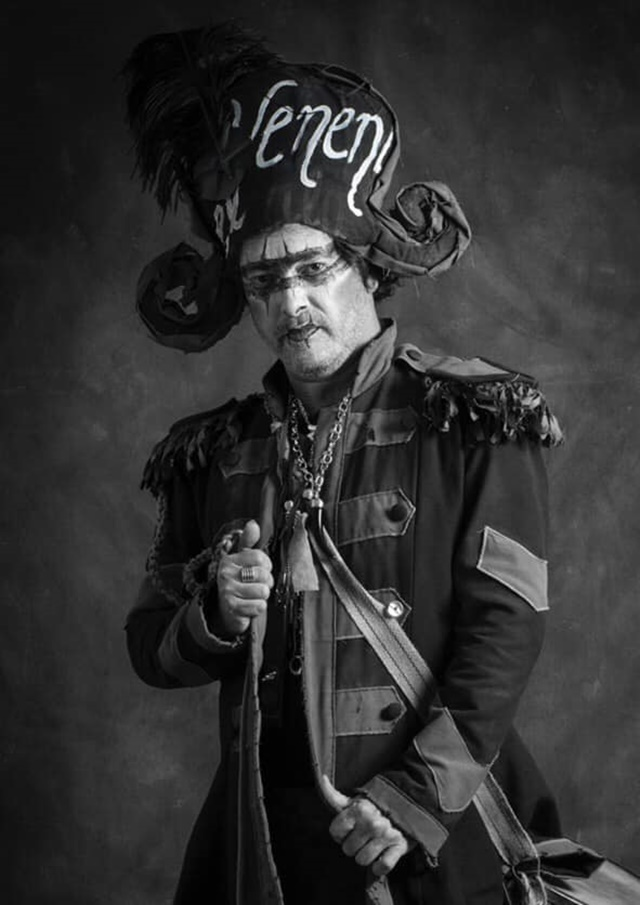

Licenciado en Filosofía por Universidad de Sevilla, compaginaba su faceta creativa con la docencia. Aragón era uno de los autores más mediáticos, dentro del concurso y fuera de él, capaz de levantar pasiones como nadie, bien a favor, bien en contra. Aunque comienza su andadura en el Carnaval de Cádiz muy joven, con agrupaciones juveniles, se recuerda sobre todo su currículo desde el año 1994 con Un Peasso Coro, agrupación que queda a tan solo nueve puntos de la final, seguida al año siguiente de Los Tintos de Verano, con la que se lleva el primer Premio Cajonazo —el primero de los que el concurso le tenía reservado—. En 1996 llega por primera vez a la final con la chirigota Los Guiris y consigue un cuarto premio en su modalidad.
Los años siguientes, con Kadi City y Las Ruinas Romanas vuelve a quedarse en la calle, pese a la gran aclamación popular de la que gozaron aquellas chirigotas. No es hasta 1999 cuando Juan Carlos consigue el primer premio con la chirigota Los Yesterdays, además logrando con el pasodoble Aunque diga Blas Infante el primer premio en el II Certamen Coplas para Andalucía. Con el nuevo siglo, Juan Carlos Aragón comienza a escribir comparsas, iniciándose con el antiguo grupo de Ángel Subiela. En este año obtiene un segundo premio con su comparsa Los Condenaos, quedando a solo un punto de resultar ganadora.
En 2002, consigue el primer premio con Los Ángeles Caídos. Simultáneamente sus chirigotas Flamenkito Apaleao, Los Panteras y Vota Picha también alcanzan las finales de su modalidad. En 2003 obtiene un cuarto premio con su comparsa Los Americanos, última agrupación que compone para el grupo de Ángel Subiela, ya que en 2004 vuelve con parte de su grupo de chirigota para presentar la inolvidable comparsa 1800 Los Inmortales. Con la misma base escribe en 2005 El Golfo de Cádiz y en 2006 Los Parias, ambas finalistas. En 2007, su comparsa Araka la Kana, tras un nuevo giro en su grupo, obtiene el primer premio de la modalidad en el COAC, con una apuesta tan revolucionaria como aplaudida por el público en general. Al margen de todo esto, durante estos años colabora como autor de música en las chirigotas dirigidas por El Petra.
Adopción del seudónimo Capitán Veneno

Juan Carlos Aragón - El capitán veneno
En 2008 escribe la comparsa La Banda del Capitán Veneno, consiguiendo el tercer puesto en el concurso del COAC. También ese año vuelve a actuar con su grupo en las tablas del Falla, consiguiendo el tercer premio. Al año siguiente escribe para Los Comparsistas se la dan de artistas, quedándose solo en semifinales. En 2010, tras nuevo cambio de grupo, presenta al concurso Las Noches de Bohemia, cuya excelencia y respuesta del público no evitó que volviese a quedarse fuera de la final en extrañas circunstancias y contra todo pronóstico.
En 2011 se presentó con Los Príncipes, quedándose por tercer año consecutivo en semifinales. A pesar de ello, en 2012 volvió a alcanzar la gran final con La Serenissima, obteniendo el segundo premio en contra del fervor popular que tras la polémica inicial la daba como favorita. En 2013 presentó Catastrophic Magic Band, bajo la polémica por la filtración de un pasodoble a cinco días del debut de la comparsa y con la que volvió a quedarse en semifinales una vez más. En 2014 y a modo de protesta contra la organización del Concurso Oficial de Agrupaciones (COAC), Juan Carlos decidió presentar fuera de concurso su nueva comparsa Los Ladrones, con la que recorrió diferentes teatros de la geografía andaluza con una espectacular acogida de público.
Ya en 2015, volvió al Concurso Oficial presentando la agrupación de Los millonarios, donde el 13 de febrero del mismo se hizo con el primer premio de comparsas. Tras este éxito de comparsa, el autor gaditano había planteado la posibilidad de que tanto él como su agrupación, iban a tomarse un descanso, aunque no llegó a cumplirse porque el 4 de octubre de ese mismo año, anunció el nombre de la comparsa para 2016, La Guayabera, con la que terminó quedando a las puertas de la final una vez más.
En 2017, Juan Carlos Aragón volvió a entrar en la final del Gran Teatro Falla con Los Peregrinos, quedando terceros. El concurso de 2018 fue el más especial de su trayectoria, con la comparsa Los Mafiosos y con la que obtuvo el que sería el último primer premio de su trayectoria carnavalesca. En 2019, creó su última comparsa, bautizada como La Gaditanissima, obteniendo el segundo premio2 y su última chirigota Er Chele Vara, siendo esta semifinalista del COAC.
Fallecimiento
Falleció en Cádiz el 17 de mayo de 2019, poco antes de su 52 cumpleaños debido a la enfermedad que le fue diagnosticada poco tiempo atrás. El 18 de mayo, sus amigos e integrantes de comparsa y de chirigota que acompañados y arropados por toda la ciudad de Cádiz dieron su último adiós al Capitán Veneno Juan Carlos Aragón Becerra, en la capilla ardiente instalada en el hall del Gran Teatro Falla.
Tras la salida del féretro hacia el coche fúnebre, se entonaron varias de las letras más famosas del autor gaditano a modo de última despedida.